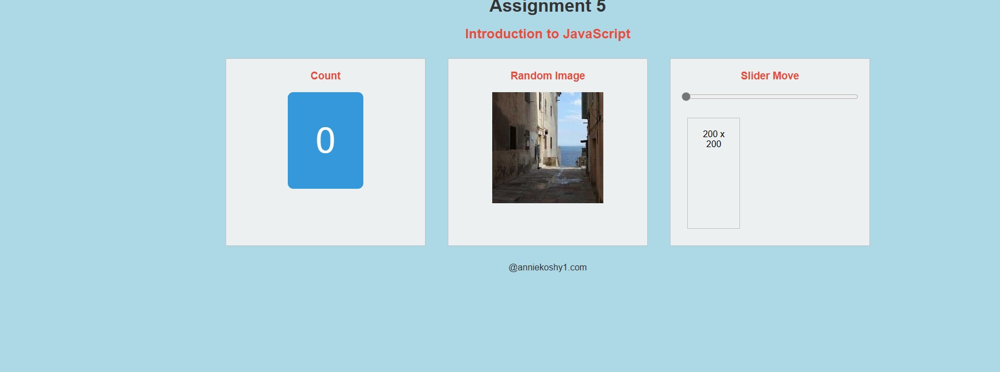
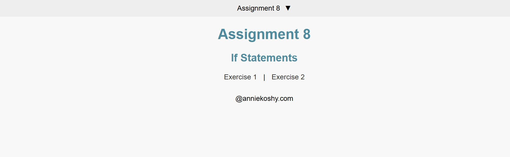
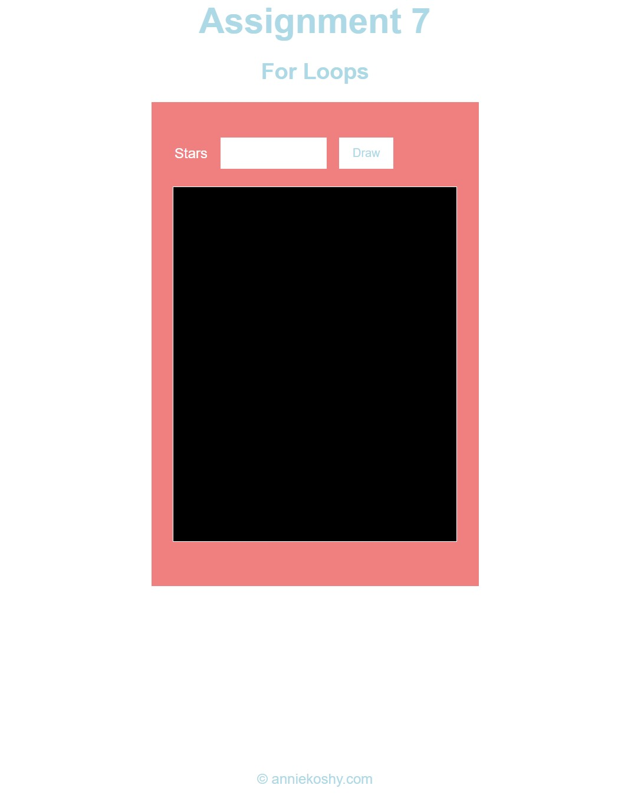
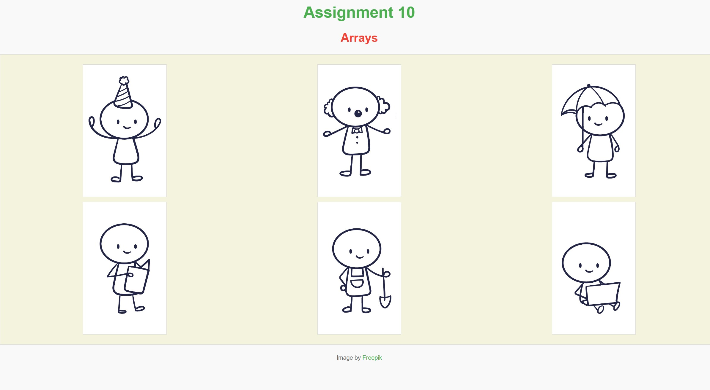
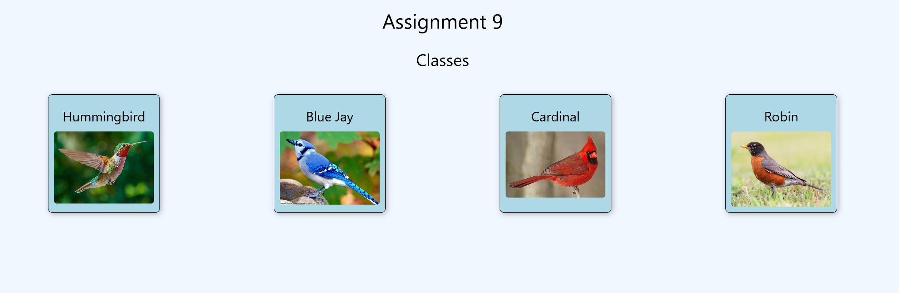
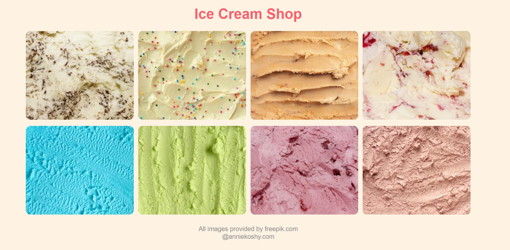
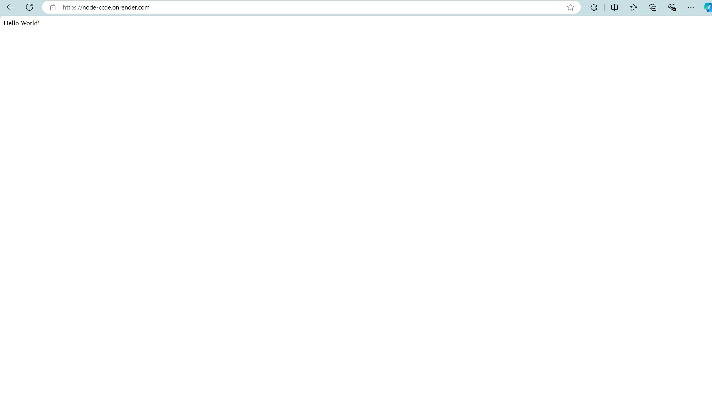
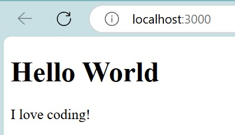

Assignment 2 - Basic CSS

This is my website about ducklings. I created it using basic HTML and CSS code.
Assignment 3 - Page layout

For this assignment, I created a website to follow and look like a template I was given. I created the website using HTML and CSS. I was able to style my webpage with Flex.
Assignment 4 - Recreate CSS Page

For this assignment, I recreated the UofSC website. I created the website using HTML and CSS. I was able to style my webpage with Flex.
Assignment 5 - JavaScript Buttons, Functions, and More
For this assignment, I created a website based off a diagram using HTML, CSS, and Javascript. The website has a counter, generates random images, and has a slider.
Assignment 6 - JavaScript: Conditionals
For this assignment, I created a website with different features using javascript. I create a color slider and picture generator that displays different random images that are either small, medium, or large based off of the users choice.
Assignment 7 - JavaScript: Loops
For this assignment, I created a webpage that draws stars.
Assignment 8 - JavaScript: Arrays
For this assignment, I created a webpage with six different images.
Assignment 9 - JavaScript: Classes
For this assignment, I created a webpage about birds that were stored in an array of classes. There were four types of birds on my website and when you clicked on each image a modal dialogue appears with information about each bird.
Assignment 10 - Parsing JSON
For this assignment, I created a webpage about about icecream flavors by parsing a JSON file.
Assignment 11 - Server Side HelloWorld
Github Repo
Render
For this assignment, I created a Hello World server app and added it to render.
Assignment 12 - React Hello World
For this assignment, I made a Hello World React app.